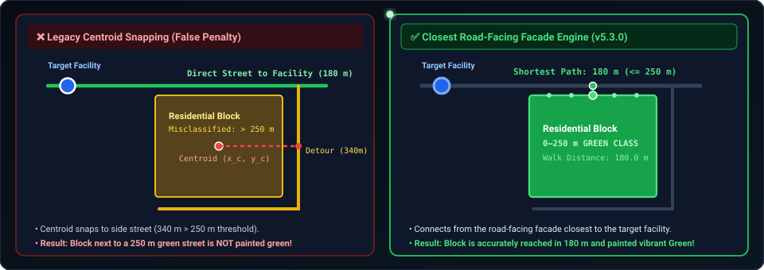
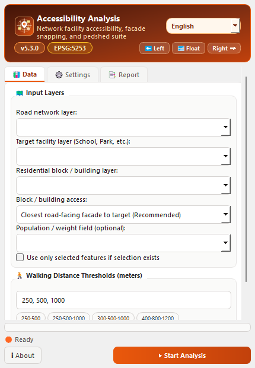

1. Closest Road-Facing Facade Snapping vs. Legacy Centroid Snapping
Conventional network accessibility tools snap residential urban blocks from their geometric centroid $(x_c, y_c)$. On elongated urban blocks bordered by multiple streets, the centroid may sit slightly closer to a side or rear street that takes a long detour away from the target school or park—falsely classifying a block right across from the facility as out-of-reach (`> 250 m`).
Accessibility Analysis v5.3.0 solves this by sampling every $5\text{ m}$ along all facades of each block/building and connecting from the road-facing facade that yields the shortest network walking distance to the target facility, while highlighting the Target Facility with a prominent Blue Circle Point (`#2563eb`, size `5.6 mm`) at the top of the layer tree.

2. Mathematical & Algorithmic Formulation
2.1. Closest Road-Facing Facade Shortest-Path Objective
Let $\mathcal{F}_i = \{f_1, f_2, \dots, f_m\} \subset \partial B_i$ denote the boundary vertices sampled at $5\text{ m}$ intervals along the exterior perimeter of residential block $B_i$. The network walking distance to the set of target facilities $\mathcal{J}$ is:
2.2. Mid-Street Edge Truncation & Non-Overlapping Isochrones
Boundary street segments $(u, v)$ of length $L_e$ are clipped at the exact metric walk threshold budget $T_k$, and outer isochrone rings subtract inner polygons so outer bands never obscure inner high-accessibility zones:
2.3. Pedshed Walkability Coverage Ratio & P-Median Demand Allocation
3. Verified Academic References (Zero-Hallucination Standard)
| Citation | Methodological Role | Verified DOI |
|---|---|---|
| Hakimi, S. L. (1964). Optimum Locations of Switching Centers and the Absolute Centers and Medians of a Graph. Operations Research, 12(3), 450–459. | P-Median Graph Theory | 10.1287/opre.12.3.450 |
| Teitz, M. B., & Bart, P. (1968). Heuristic Methods for Estimating the Generalized Vertex Median of a Weighted Graph. Operations Research, 16(5), 955–961. | Facility Demand Allocation | 10.1287/opre.16.5.955 |
| Talen, E. (1997). The Social Equity of Urban Service Distribution: An Exploration of Park Access in Pueblo, Colorado, and Macon, Georgia. Urban Geography, 18(6), 521–541. | Urban Facility Equity | 10.2747/0272-3638.18.6.521 |
| Leslie, E., et al. (2007). Walkability of local communities: Using geographic information systems to objectively assess relevant environmental attributes. Health & Place, 13(1), 111–122. | Pedshed Walkability Ratio | 10.1016/j.healthplace.2005.11.001 |
| Dijkstra, E. W. (1959). A note on two problems in connexion with graphs. Numerische Mathematik, 1(1), 269–271. | Multi-Source Shortest Path | 10.1007/bf01386390 |
4. 100% English Default Interface & 5-Language Selector

Figure 1: Accessibility Analysis v5.3.0 default English interface with 18px low-threshold dock/float controls and 5-language selector (EN, TR, ZH, ES, ID).